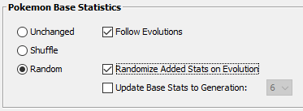
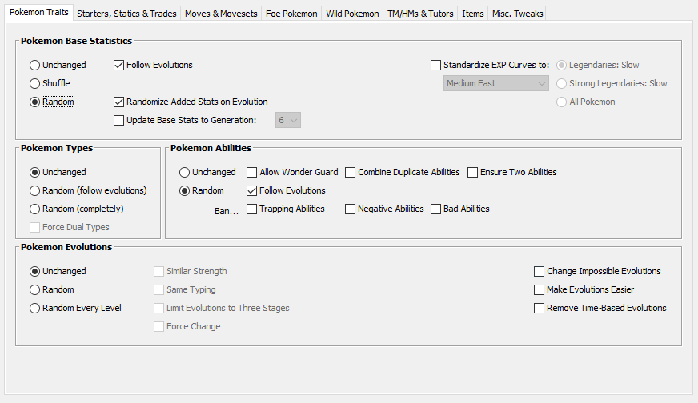
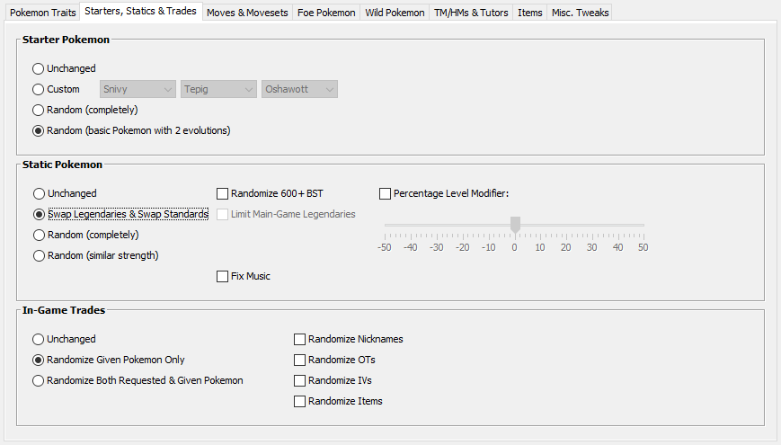
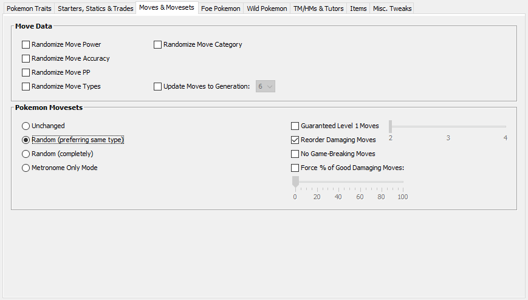
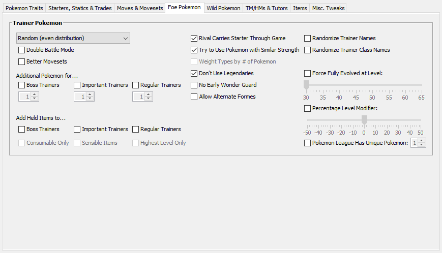
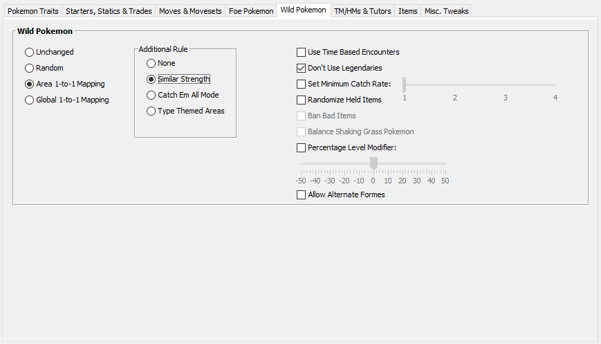
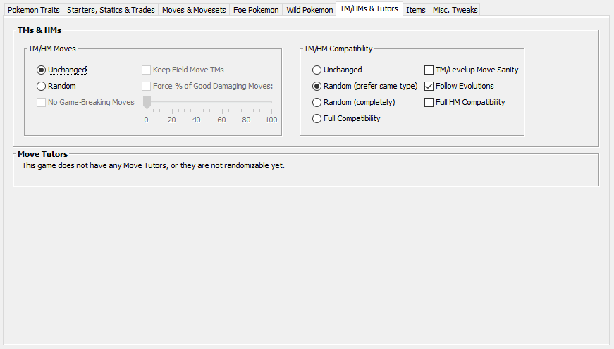

#02
ok i've had this idea for a while and i guess now is a good time to try this:
so the universal pokemon randomizer i use has a very interesting setting that i haven't seen used very often - randomized base stats.

in case it isn't obvious, this will shuffle around the base stats of every pokemon. so instead of, say, glalie being a flat 80/80/80/80/80/80, it'll instead be something like 68/72/108/110/45/77 (both add up to a BST of 480). this is interesting because it means that pokemon's roles may not match what you expect. for instance maybe you'll run into a trainer using a shuckle and be like "ok this is just a defensive wall". and then it kills you with its 150 base attack or something.
that may sound kinda unfair but it kinda recreates the experience of playing the game anew, where you don't know what each pokemon is capable of. but of course you know how the game works fundamentally, so it's more like a new game plus? i guess? this metaphor sucks actually i'm moving on
anyways what im thinking is that i just play through a randomizer with this setting on, documenting the pokemon and their stat changes. further more i could randomize abilities and/or moves. not so sure about moves, but it could help with the possible issue of "my special attacker has no special attacking moves because it's normally very much a physical attacker oh no" (actually i did a little research and this is unlikely but still). it would also add to the "documenting a new game" feel of the run that i'm kinda going for, so maybe i will in fact randomize the moves. prefering same type though.
also im doing pokemon black since its the most recent pokemon game that i dont really remember well (played a ton of pearl, didn't really care for gen 5-7 but i played all of them so i remember bw the least)
with all of this, this is what the randomizer is looking like so far:

random BSTs and random abilities. things follow evolution so that things make some sort of sense. stats add to BST because i thought it would be more fun than the other option, which is that the stats stay at the same proportion throughout the evolutions.

i like having the starter still have 2 evolutions, it makes it still feel like a starter. i also dont like randomizing legendaries into the normal pokemon pool. i'm still kinda trying to emulate the feel of the base game somewhat.

random moves, as stated earlier. reordered just so that i dont get a really strong move really early or a really weak move really late, again trying to emulate the base game feel kinda. i wish it was like "increasing strength with some noise" just so its not straight upgrades constantly but eh. i'll take what i can get

random trainer mons. not much to be said here. i like having the rival keep the starter, pokemon of similar strength so i don't run into a fully evolved pokemon on route 1, and no legendaries is self-explanatory.

similar strength no legendaries etc etc

same deal as the random moves. nothing was changed under items, and nothing important was changed under misc, so that's it.
...probably. there's something else i want to do with this but i'll talk about that another time. i wonder if anyone is even reading this